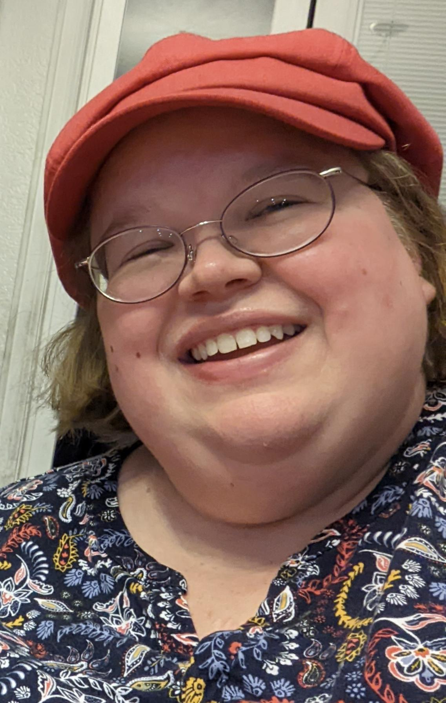

Hello!
I am Jenni Grubbs
I am a software developer who lives in Northglenn in the Denver, Colorado area.
I'm a Colorado native who spent 20-plus years as a newspaper journalist and editor before going back to school
to take on a new career.
Over my career in journalism, I watched websites go from something "nice to have" to the way most people get
their news today. I knew websites and coding were where my future was headed, as well.
With my new coding skills, combined with my pre-existing editing and journalism-related knowledge base, I will
help my future employer and its clients create:
- Web designs that convey useful information through attractive design;
- Code that delivers exactly what's promised and needed;
- Opportunities for collaboration with fellow developers and growth for all involved.
Feel free to poke around my website, and then reach out to me at jennigrubbsjrn@gmail.com to find out more.
About Jenni
Writing has always been important to me, and now I'm learning a new way to write through coding. I am using
languages like JavaScript, HTML and CSS, with plenty more languages to learn as I go and the desire to soak it
all in.
Websites have played a large role in more than half of my life, whether it was the website for the newspapers I
was working for, the website of an online magazine or blog that I copyedited, my social media sites, the online
store I was shopping, or the search engine being used to fact check something. Now I'm learning about how
websites are created, what makes them work (and break), how to fix them when they break, and what makes it all
function.
The Thinkful program is giving me an opportunity to reinvent myself and become an asset for my future employer.
I'm looking forward to whatever challenges are waiting for me as a software developer, as well as the chance to
collaborate with fellow developers on projects big and small.
In my free time, I enjoy spending time with family, photography, reading thrillers and nonfiction, and writing
my own fictional works. I currently have a novel-in-progress, as well as ideas for plenty more writing projects
in the future, whether in English or a coding language.